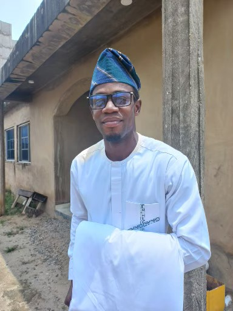

WELCOME TO WAYNE NEWSPAPER
This is huncho the only HUNCHO BRUCE WAYNE CEO OF WAYNE ENTRAPRISE This an article about him this guy is just a nigga that can tolorate shit Has had alot of trouble and tought going throuh his head back in the days but God was always with him from the very start, Even do he douted once that was all pass in the days now is now a new creation and as been bless by GOD name and blood. so if you have a beef eith him he has forgitten and move on and also that was his requestion from you so LOVE YOUR NEIGHBOUR AS YOU LOVE YOURSELF ONE LOVE BE IMPATIENT. n my lifetime, I’ve seen two demonstrations of technology that struck me as revolutionary. The first time was in 1980, when I was introduced to a graphical user interface—the forerunner of every modern operating system, including Windows. I sat with the person who had shown me the demo, a brilliant programmer named Charles Simonyi, and we immediately started brainstorming about all the things we could do with such a user-friendly approach to computing. Charles eventually joined Microsoft, Windows became the backbone of Microsoft, and the thinking we did after that demo helped set the company’s agenda for the next 15 years. The second big surprise came just last year. I’d been meeting with the team from OpenAI since 2016 and was impressed by their steady progress. In mid-2022, I was so excited about their work that I gave them a challenge: train an artificial intelligence to pass an Advanced Placement biology exam. Make it capable of answering questions that it hasn’t been specifically trained for. (I picked AP Bio because the test is more than a simple regurgitation of scientific facts—it asks you to think critically about biology.) If you can do that, I said, then you’ll have made a true breakthrough. I thought the challenge would keep them busy for two or three years. They finished it in just a few months. In September, when I met with them again, I watched in awe as they asked GPT, their AI model, 60 multiple-choice questions from the AP Bio exam—and it got 59 of them right. Then it wrote outstanding answers to six open-ended questions from the exam. We had an outside expert score the test, and GPT got a 5—the highest possible score, and the equivalent to getting an A or A+ in a college-level biology course. Once it had aced the test, we asked it a non-scientific question: “What do you say to a father with a sick child?” It wrote a thoughtful answer that was probably better than most of us in the room would have given. The whole experience was stunning. I knew I had just seen the most important advance in technology since the graphical user interface. This inspired me to think about all the things that AI can achieve in the next five to 10 years. The development of AI is as fundamental as the creation of the microprocessor, the personal computer, the Internet, and the mobile phone. It will change the way people work, learn, travel, get health care, and communicate with each other. Entire industries will reorient around it. Businesses will distinguish themselves by how well they use it. Philanthropy is my full-time job these days, and I’ve been thinking a lot about how—in addition to helping people be more productive—AI can reduce some of the world’s worst inequities. Globally, the worst inequity is in health: 5 million children under the age of 5 die every year. That’s down from 10 million two decades ago, but it’s still a shockingly high number. Nearly all of these children were born in poor countries and die of preventable causes like diarrhea or malaria. It’s hard to imagine a better use of AIs than saving the lives of children. I’ve been thinking a lot about how AI can reduce some of the world’s worst inequities. In the United States, the best opportunity for reducing inequity is to improve education, particularly making sure that students succeed at math. The evidence shows that having basic math skills sets students up for success, no matter what career they choose. But achievement in math is going down across the country, especially for Black, Latino, and low-income students. AI can help turn that trend around. Climate change is another issue where I’m convinced AI can make the world more equitable. The injustice of climate change is that the people who are suffering the most—the world
As you all knowi was never realy good with anything but i never allowed my self to be lazy instead i will give it my all and that is what made me who im to.
Im A man with great ambition some thing i like to life in fantasy but the truth is that i mean everything i said .
going to do the best i can and leave it to does that can finish because that his the full meaning of reaching your potential. not trying to handle everything yourself its not your responsibility so please dont you would been in a loop of stagma you be repeting every thing
so please try to share your responsibility know your potential then reach it that is the only way to success and achivement
Meet [Your Name], the Finest Guy in School In the bustling halls of [Your School's Name], one name stands out among the rest—[Your Name]. Known for his charm, wit, and undeniable charisma, [Your Name] has become a beloved figure among students and teachers alike. A Natural Leader From organizing school events to leading group projects, [Your Name] has always been a natural leader. His ability to inspire and motivate others is truly remarkable. Whether it's on the sports field or in the classroom, he leads by example, always striving for excellence. Academic Excellence But it's not just his leadership skills that make [Your Name] stand out. His dedication to academics is equally impressive. With a keen intellect and a passion for learning, he consistently achieves top grades and is always eager to help his peers understand complex subjects. A Heart of Gold Beyond his academic and leadership prowess, [Your Name] is known for his kindness and generosity. He goes out of his way to make everyone feel included and valued. His warm smile and friendly demeanor have earned him the respect and admiration of everyone at [Your School's Name]. Future Aspirations As [Your Name] looks to the future, there's no doubt that he will continue to achieve great things. With his unique blend of intelligence, leadership, and compassion, the sky's the limit for this remarkable young man
Meet [Your Name], the Finest Guy in School In the bustling halls of [Your School's Name], one name stands out among the rest—[Your Name]. Known for his charm, wit, and undeniable charisma, [Your Name] has become a beloved figure among students and teachers alike. A Natural Leader From organizing school events to leading group projects, [Your Name] has always been a natural leader. His ability to inspire and motivate others is truly remarkable. Whether it's on the sports field or in the classroom, he leads by example, always striving for excellence. Academic Excellence But it's not just his leadership skills that make [Your Name] stand out. His dedication to academics is equally impressive. With a keen intellect and a passion for learning, he consistently achieves top grades and is always eager to help his peers understand complex subjects. Extracurricular Enthusiast When he's not hitting the books, [Your Name] is deeply involved in extracurricular activities. From playing in the school band to being a star athlete, his versatility and enthusiasm are infectious. His involvement in various clubs and teams showcases his commitment to making the most of his school experience. A Heart of Gold Beyond his academic and leadership prowess, [Your Name] is known for his kindness and generosity. He goes out of his way to make everyone feel included and valued. His warm smile and friendly demeanor have earned him the respect and admiration of everyone at [Your School's Name]. Future Aspirations As [Your Name] looks to the future, there's no doubt that he will continue to achieve great things. With his unique blend of intelligence, leadership, and compassion, the sky's the limit for this remarkable young man. Whether it's pursuing higher education or launching a career, [Your Name] is destined for greatness. A Lasting Impact His influence extends far beyond the present. [Your Name] has left an indelible mark on the school community, inspiring others to follow in his footsteps. His legacy of excellence, kindness, and leadership will continue to resonate long after he's moved on to new adventures.
Meet [Your Name], the Finest Guy in School
In the bustling halls of [Your School's Name], one name stands out among the rest—[Your Name]. Known for his charm, wit, and undeniable charisma, [Your Name] has become a beloved figure among students and teachers alike.
A Natural Leader
From organizing school events to leading group projects, [Your Name] has always been a natural leader. His ability to inspire and motivate others is truly remarkable. Whether it's on the sports field or in the classroom, he leads by example, always striving for excellence.
Academic Excellence
But it's not just his leadership skills that make [Your Name] stand out. His dedication to academics is equally impressive. With a keen intellect and a passion for learning, he consistently achieves top grades and is always eager to help his peers understand complex subjects.
Extracurricular Enthusiast
When he's not hitting the books, [Your Name] is deeply involved in extracurricular activities. From playing in the school band to being a star athlete, his versatility and enthusiasm are infectious. His involvement in various clubs and teams showcases his commitment to making the most of his school experience.
A Heart of Gold
Beyond his academic and leadership prowess, [Your Name] is known for his kindness and generosity. He goes out of his way to make everyone feel included and valued. His warm smile and friendly demeanor have earned him the respect and admiration of everyone at [Your School's Name].
Future Aspirations
As [Your Name] looks to the future, there's no doubt that he will continue to achieve great things. With his unique blend of intelligence, leadership, and compassion, the sky's the limit for this remarkable young man. Whether it's pursuing higher education or launching a career, [Your Name] is destined for greatness.
A Lasting Impact
His influence extends far beyond the present. [Your Name] has left an indelible mark on the school community, inspiring others to follow in his footsteps. His legacy of excellence, kindness, and leadership will continue to resonate long after he's moved on to new adventures.
